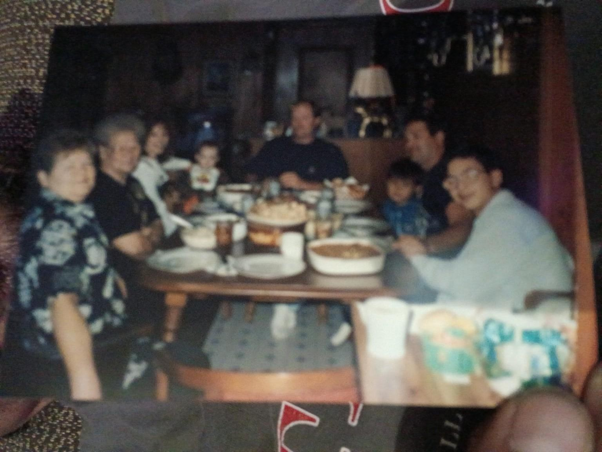
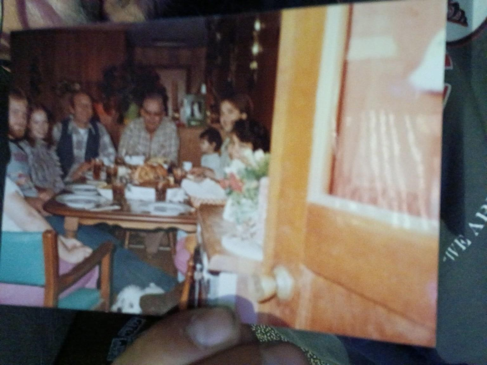
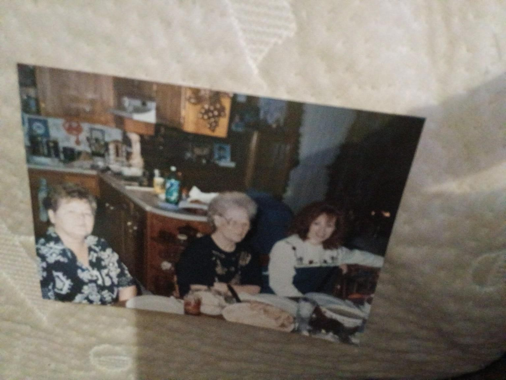

A person
Someone whose presence turned an ordinary room into the place everybody remembers.

Mamaw's House is not asking one person to save a house. It is asking 150,000 people to carry one dollar, one share, and one family story forward.
Protected. Preserved. Kept in the family.
All donations are handled by GoFundMe. This site never receives your payment information.
The mission
$1 × 150,000 Tennessee Volunteers = $150,000
The fundraising total lives on GoFundMe, so supporters always see the current number at the source.
The Hayes family story
Mamaw's House was where the Hayes family gathered, ate, talked, laughed, grew up, came back, and made the ordinary memories that become priceless later.
These are Hayes family photographs from different years and different gatherings. They are not decoration. They are part of the reason this house matters.
If you grew up saying Mamaw and Papaw, you already know those words can hold half a childhood.
A house can be counted in rooms. A home gets counted in who gathered there.
The goal is simple to say and hard to do: protect Mamaw's House, preserve what it carries, and keep it in the family. The campaign does not need one person to do everything. It needs enough people to do one small thing.



Why people share stories like this
Maybe you had a Mamaw and Papaw. Maybe your family used different names. Either way, most of us can picture one person, one table, or one house that still carries more meaning than any price tag.
Someone whose presence turned an ordinary room into the place everybody remembers.
Meals, stories, arguments, laughter, children growing up, and people coming back years later.
A place that means more than its market value because part of the family still lives in the memories attached to it.
If somebody from your own family came to mind while reading this, carry Mamaw's House one person farther.
The $1 Volunteer Challenge
Give $1 if you can. Share once either way. Ask one person to keep it moving. Three small actions, repeated enough times, can carry one family story farther than one person ever could.
$1 or whatever feels right, through the official GoFundMe.
Put the story in front of one more person.
Ask that person to keep the chain moving.
House journal
CAMPAIGN HUB
This page will keep the Hayes family story, the $1 Volunteer Challenge, and verified campaign updates together in one place. Donations continue to happen only through the official GoFundMe.
Built with a firewall
No credit card or bank information is entered here.
This site does not collect supporter names or personal information.
No advertising pixels, analytics SDKs, or third-party JavaScript are loaded.
Live fundraising progress stays on GoFundMe so the public number is not duplicated or allowed to go stale here.
One Volunteer at a time
If Mamaw's House made you think of somebody you love, that memory is reason enough to pass the story on.